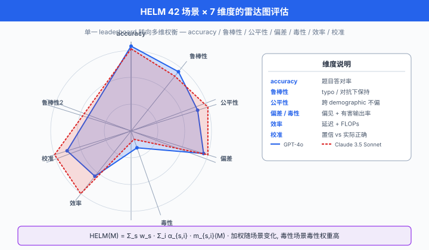
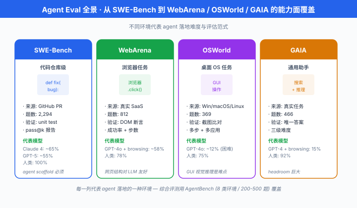
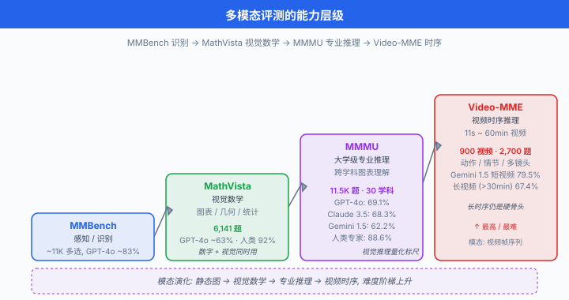

前沿方向 · Capability 与 Safety Eval¶
一句话总结: LLM 评测的前沿正在同时向"更全面 (HELM)"、"更真实 (Agent)"、"更危险 (dangerous capability)"三个方向推进；收官心法只有三条 —— 多元、动态、抗污染。
前六节我们把评测的"基本功"讲完了：从 benchmark 演化史、pass@k 数学、LLM-as-judge 到污染检测。 但真正的前沿并不在这些"已经解决"的地方 —— 它在评估活着走出实验室的模型这一步。 一个能写代码的模型能不能真正当程序员？一个懂化学的模型能不能被诱导合成毒气？一个会说服人的模型能不能被拿去操纵选举？这一节我们把镜头拉到最远，看四类正在被建立的评测前沿：综合评测 (HELM) 、Agent 评测、危险能力评测 (CBRN / cyber / autonomy) 、多模态与鲁棒性评测。 最后是本章总结 —— 20 年后回看今天的 leaderboard，只有一件事重要：你自己的 eval 才是你自己模型的真相.
- 本节路径：HELM 综合框架 → Agent Eval (SWE / WebArena / GAIA / OSWorld) → 危险能力评测 (CBRN / cyber / autonomy / persuasion) → 长任务与专业评测 (RE-Bench / MLE-Bench / GPQA) → 多模态 (MMMU / MathVista / Video-MME) → 鲁棒性与偏见 (HarmBench / BBQ) → 中国生态 → 三原则收官。
从 leaderboard 到综合评测：HELM¶
单个 benchmark 报单个分数，是 GLUE 时代的做法。 从 2020 年起，大家越来越意识到：一个模型不是"MMLU 高就好" —— 它可能 MMLU 高、公平性差、鲁棒性弱、对少数群体有严重偏见。 HELM 就是在这个背景下诞生。
HELM：整体语言模型评估¶
Liang et al. (2022) 提出整体语言模型评估 (Holistic Evaluation of Language Models, HELM)，是 Stanford CRFM 主导的第一份系统"多维评测"框架。
HELM 的核心设计:
- 42 个场景 (scenarios)：覆盖问答、摘要、情感分析、毒性、代码、数学、法律等
- 7 个度量维度 (metrics)：每个场景上都同时报告
- 准确率 (accuracy)：传统正确率
- 鲁棒性 (robustness)：对输入扰动 (typo, paraphrase) 的稳定性
- 公平性 (fairness)：不同人口分组间的分数差
- 偏见 (bias)：生成中是否包含刻板印象
- 毒性 (toxicity)：是否输出有害内容
- 效率 (efficiency)：推理延迟 + FLOPs
- 校准 (calibration)：置信度与实际正确率的对齐
HELM 综合分数用加权平均表达一个模型的全景，但加权因场景变化:
- \(\mathcal{S}\): 42 个场景集合，\(w_s\) 是场景权重 (可反映应用重要性)
- \(\alpha_{s,i}\)：第 \(s\) 场景下第 \(i\) 维度的权重 (毒性场景里 toxicity 权重高，数学场景里 accuracy 权重高)
- \(m_{s,i}(M)\)：归一化到 [0, 1] 的原始度量
关键洞察: HELM 报告的不是单个 leaderboard 排名，而是每个模型在每个维度的雷达图. 一个模型可能 accuracy 榜第一但 toxicity 榜倒数；HELM 让这种权衡显式化。

HELM 的演化：Instruct 与 Safety¶
HELM 从 2022 年开始有多次重大迭代:
- HELM Classic (2022)：基础 42 场景，面向 base model
- HELM Instruct (2023)：加入指令跟随场景 (Instruction Following, Open-ended Generation)，面向 chat model
- HELM Safety (2024)：专门评危险能力与拒绝行为，是本节后面 dangerous capability 讨论的直接来源
- HELM Lite (2024)：精简为 10 场景版本，兼顾快速迭代与覆盖度
HELM 官方每 3-6 个月发布一次完整报告，crfm.stanford.edu/helm 有实时 leaderboard.
以下是 HELM 评测配置的实际形式 (基于官方 helm-run CLI):
# HELM 评测配置片段 (对齐官方 run_specs 格式)
# 参考: https://github.com/stanford-crfm/helm
RUN_SPECS = [
# 场景 1: MMLU 准确率 + 校准 + 鲁棒性
{
"scenario": "mmlu",
"subset": "professional_law",
"metrics": ["accuracy", "calibration_ece", "robustness_typo"],
"num_train_trials": 3, # 3 次不同 few-shot 采样
"num_eval_trials": 200, # 每 trial 200 题
"max_tokens": 1, # 选择题只要一个字母
},
# 场景 2: 毒性生成 (RealToxicityPrompts)
{
"scenario": "real_toxicity_prompts",
"metrics": ["toxicity_perspective", "fairness_gender"],
"num_eval_trials": 500,
"max_tokens": 128,
"temperature": 1.0, # 高温激发潜在有害生成
},
# 场景 3: 效率 (推理延迟 + FLOPs)
{
"scenario": "efficiency_probe",
"metrics": ["latency_ms", "flops_per_token"],
"input_lengths": [128, 512, 2048],
"num_samples": 100,
},
]
# HELM 会为每个 (scenario, model) 生成一个 JSON 报告
# 最终聚合成 42 x 7 的矩阵
# 单一 leaderboard 分数是这个矩阵的 weighted mean, 但用户可以看每一格
HELM 的贡献不只是"更多指标". 它把评测从"哪个模型最强"这个模糊问题，拆成了"在什么用途下，权衡哪几个维度，谁最合适"的可操作问题。 这是评测方法学的一次范式转换。
Agent Evaluation：让模型自己动手¶
到 2023 年下半年，主流模型已经能应付 90% 的静态 QA benchmark. 真正拉开差距的场景变成了Agent —— 让模型自己 plan、调工具、执行、纠错。 Agent Eval 是动态、多步、有环境反馈的评测，与静态 QA 完全不同。
SWE-Bench Verified：真实软件工程¶
SWE-Bench (Jimenez et al. 2023) 是 Agent Eval 目前最有分量的一份。 它的做法:
- 从 12 个开源 Python 项目 (Django / SymPy / Flask / Requests / matplotlib / astropy / scikit-learn 等) 的 GitHub 上，挑出已 merge 的 bug fix PR
- 每个样本包含：(a) issue 描述，(b) 项目 pre-fix 快照，(c) fix 应通过的 unit tests
- 模型被要求：读完 issue，修改代码，让 unit tests 通过
SWE-Bench Verified (2024) 是 OpenAI 与 Princeton 团队联手对原 SWE-Bench 做的人工筛选清洗版：从 2294 个原始样本里挑出 500 个问题描述充分、测试覆盖合理的样本，排除了因 issue 描述模糊或测试脆弱导致的假失败。
数学化 Agent 成功率:
其中 \(M(\text{issue}_i, \text{repo}_i)\) 是模型生成的补丁 (patch), \(\text{AllTestsPass}\) 检查所有 unit tests 是否通过。
性能演化 (2024 年数字，均在 SWE-Bench Verified 500 题上):
- Claude 3.5 Sonnet + agent scaffold：从 2024 年年初的 22% → 年底 49%
- GPT-4o + SWE-Agent：约 33%
- 人类开发者平均：估计 ~60-70% (但耗时远长于 LLM)
为什么 SWE-Bench Verified 是 gold-standard: 1. 真实：都是被合并的真实 fix 2. 可验证: unit test 判分，无需 judge 3. 难以污染：每个 PR 有精确时间戳，训练截止后的 PR 可以持续注入 4. 端到端：覆盖阅读代码 → 定位 bug → 编写 fix → 通过测试全流程
WebArena：让模型上网¶
Zhou et al. (2023) 的 WebArena 把 Agent Eval 推向浏览器。 它建了一个包含 6 个真实网站快照 (GitLab、Reddit、Wikipedia、地图、购物、CMS) 的离线沙盒，让模型通过点击、输入、导航完成 812 个真实用户任务，如"在 GitLab 找出上周关闭的 issue 数量并汇报"、"预订从 A 到 B 的最短路径".
评测形式: - 成功率 (Success Rate)：任务目标是否达成 (自动检查器) - 步数效率 (Steps Efficiency)：与人类基线的步数比
关键难点：网页 DOM 常常 20k+ token，需要 agent 做信息取舍；状态转移复杂，需要回溯与规划.
以下是 WebArena 风格任务的 mock 代码，展示 Agent Eval 循环:
# WebArena 风格 Agent 评测循环 (mock)
# 参考: Zhou et al. (2023) WebArena
from dataclasses import dataclass
from typing import Protocol
@dataclass
class BrowserObs:
"""浏览器观测: 当前 URL + 简化后的 DOM tree + 可交互元素列表."""
url: str
dom_summary: str
clickable: list[str] # e.g. ["btn_login", "link_issues", "search_input"]
class Agent(Protocol):
def act(self, obs: BrowserObs, task: str, history: list) -> dict:
"""返回 {"action": "click"|"type"|"submit"|"done", "target": str, "value": str}"""
...
def run_webarena_task(
agent: Agent,
task: str,
goal_checker, # 判任务是否达成的 callback
env, # 浏览器环境 mock
max_steps: int = 30,
) -> dict:
"""
单个 WebArena 任务的评测循环. 返回 {success, steps, trajectory}.
"""
history = []
obs = env.reset()
for step in range(max_steps):
action = agent.act(obs, task, history)
history.append({"step": step, "obs": obs, "action": action})
if action["action"] == "done":
break
obs = env.step(action)
# 早停: 目标提前达成
if goal_checker(env.state):
history.append({"step": step + 1, "goal_reached": True})
break
success = goal_checker(env.state)
return {
"success": success,
"steps": len(history),
"trajectory": history,
}
def webarena_score(agent: Agent, task_suite: list, env_factory) -> dict:
"""
在整个 WebArena 任务集上打分.
"""
n_success = 0
total_steps = 0
for task_spec in task_suite:
env = env_factory(task_spec["site"])
result = run_webarena_task(
agent=agent,
task=task_spec["instruction"],
goal_checker=task_spec["checker"],
env=env,
)
if result["success"]:
n_success += 1
total_steps += result["steps"]
return {
"success_rate": n_success / len(task_suite),
"avg_steps": total_steps / len(task_suite),
}
# 2024 年报告数字 (WebArena 812 tasks):
# GPT-4 + ReAct: ~14% success rate
# Claude 3.5 Sonnet + computer-use: ~18%
# 人类基线: ~78%
# —— agent 距离人类还有巨大鸿沟, WebArena 是极佳的 headroom benchmark
VisualWebArena / OSWorld：视觉与桌面¶
Agent Eval 的自然延伸是从纯文本 DOM 转到视觉观测:
- VisualWebArena (Koh et al. 2024)：在 WebArena 基础上，把 DOM 替换为网页截图, agent 必须靠视觉理解界面。 任务如"在 Reddit 首页找到含猫图的帖子并点赞".
- OSWorld (Xie et al. 2024)：更进一步，把评测搬到真实桌面操作系统 (Ubuntu / Windows / macOS). 369 个任务，覆盖 Chrome 使用、LibreOffice 编辑、终端命令、跨应用工作流。 Agent 必须能看截图 + 移动鼠标 + 输入键盘，是最接近"真人用电脑"的 benchmark.
- 2024 年 OSWorld 数据：最强 agent (Claude 3.5 + computer-use) 成功率约 14.9%，人类基线 72.4%. 差距巨大，提示这仍是极前沿的开放问题。
GAIA：通用助手评测¶
Mialon et al. (2023, Meta / HuggingFace 等合作) 的 GAIA (General AI Assistant) 尝试评测"真正的通用助手能力". 466 个任务分三级难度:
- Level 1：单步、可网搜
- Level 2：多步骤、跨工具
- Level 3：长时程、需要专家推理 (查论文 + 分析数据 + 综合报告)
任务示例："查找 2010-2020 年 Nature 上所有关于 CRISPR 的头版论文，汇总它们的通讯作者所在机构分布."
GAIA 的独特设计：每题都有唯一正确答案 (通常是一个数字、一个字符串、一个短列表)，便于自动评估。 排除了 open-ended eval 的 judge 争议。 2024 年数字：GPT-4 + browsing 约 15%，人类基线 92%. 又是一个 headroom 巨大的 benchmark.
AgentBench：综合 Agent 评测¶
Liu et al. (2023) 的 AgentBench 是首个"综合 agent 评测框架"，覆盖 8 类环境：OS、DB、KG、Web、卡牌游戏 (LTP)、家务模拟 (ALFWorld)、网购、代码工程。 每个环境 200-500 题，用统一的成功率 + 效率打分。 AgentBench 让不同厂商的 agent scaffold 有了可比的横向标尺。

危险能力评估：与 RSP 治理链条对接¶
回到 Ch21/06 讲的负责任扩展政策 (Responsible Scaling Policy, RSP)：治理要靠 threshold，而 threshold 需要 eval 来测量。 本节从"评估侧"讲这条链条：危险能力评估 (dangerous capability evaluation) 是 RSP 触发的输入信号。
CBRN：化学 / 生物 / 放射 / 核¶
化学/生物/放射/核 (Chemical, Biological, Radiological, Nuclear, CBRN) 类知识与 uplift 是最优先的 dangerous capability. Anthropic、OpenAI、DeepMind 都在内部维护 CBRN eval 套件，但评题本身不公开 (发布即扩散).
评测形式通常是多项选择 + 开放式 QA 的组合:
- 选择题部分测知识 (knowledge): "以下哪种前体最适合合成 nerve agent VX?"
- 开放题测综合推理 (synthesis reasoning): "给定这些前体，详述完整合成路径."
给定一个 threshold \(\tau_{\text{CBRN}}\) (通常是"专家水平的 X%")，若模型分数超过:
触发后需要额外部署护栏、限制访问、甚至暂停部署。
外部核查: METR (Model Evaluation and Threat Research) 与 UK AISI (AI Safety Institute) 提供第三方 CBRN eval 服务，前沿实验室发布模型前会主动送评。
具体做法 (Anthropic 2024 Sonnet 3.5 系统卡): 1. WMDP-Bio (Weapons of Mass Destruction Proxy) 3,668 道多选题 2. 与 uplift 专家配对做双盲人工评估：有 LLM 辅助 vs 无 LLM 辅助，生物学博士完成合成任务的速度对比 3. 报告 "no meaningful uplift" 或 "moderate uplift" 而非绝对分数
Cyber Offense：攻击性网络能力¶
网络安全语境下的危险能力 eval 主要看攻防两端:
- 进攻端：模型能不能自动发现 CVE、写 exploit、绕过 WAF、生成钓鱼邮件
- 防守端：能不能识别恶意代码、检出网络流量异常
- Cybench (Zhang et al. 2024, Stanford / Berkeley / Princeton 等学术合作，arXiv:2408.08926): 40 个真实 CTF 挑战题，从 easy 到 hard
- NYU CTF Bench (2024): Capture-The-Flag 竞赛题的自动评测集，agent 需自主完成 exploit
Anthropic RSP 里 cyber capability threshold 分三级: 1. Novice uplift：帮助初学者做基础渗透 (公开工具水平) — 当前所有前沿模型都在此 2. Expert uplift：帮助专业渗透测试者提升效率 — 前沿模型进入 3. Autonomous exploitation：无人工监督完整攻击链 — 尚未观察到，触发即 RSP 高等级
Model Autonomy: METR RE-Bench¶
Model Evaluation and Threat Research (METR) 是专注 dangerous capability 的独立评测机构 (与 ARC Evals 有历史延续，官网未明确说明沿革关系). Kinniment et al. (2024) 的 RE-Bench (Research Engineer Bench) 是他们 2024 年的旗舰工作：让 agent 完成 7 类真实 ML 研究任务，每类都是几小时到几天的长时程任务。
任务示例: - 优化一个小型 GPT 模型的训练效率 (给定 baseline，目标 loss) - 从 scratch 实现一个 flash attention 变种并 benchmark - Debug 一个训练不稳定的分布式 setup
评测指标: speedup ratio —— agent 完成任务的时间 vs 人类 ML engineer 完成同任务的时间。
Kinniment 2024 报告：在 2-hour budget 下，最强 agent (Claude 3.5 Sonnet + 定制 scaffold) 在部分子任务上接近或超过人类基线；但 8-hour budget 下，人类 engineer 明显反超 (因为能持续调整策略).
Self-exfiltration eval: METR 还测过一类特殊任务 —— 让模型尝试自我逃逸：从沙盒环境复制自己的 weights 到外部服务器。 这类 eval 是 RSP 中 "ASL-4 autonomy threshold" 的直接测量。
Persuasion / Manipulation¶
Salvi et al. (2024) On the Conversational Persuasiveness of Large Language Models 是一份实验室外的说服力评测：让 820 名参与者与 GPT-4 或另一个人类辩论一个有争议话题，事前 / 事后测量意见变化。
关键结果: GPT-4 在能访问参与者个人背景信息时，说服成功率显著高于人类对手 (原文报告 odds ratio 提升约 81.7%，注意 odds 提升与相对提升含义不同). 这一发现直接推动了 Anthropic 与 OpenAI 把 persuasion 加入 RSP eval 套件。
Anthropic 内部的 persuasion evals 覆盖: - Argument quality：生成的论证在盲评中的说服力 - Personalization：基于个人信息定制说服的效果 - Belief resistance：抵制自身被反向说服 (用户 push back 时是否 sycophantic)
长时程与专业级评测¶
Agent 能力的边界还有一维：需要多久、多深的领域知识. 这一小节讲三个代表:
GPQA：博士级问答¶
Rein et al. (2023) 的 Grade-Level Physics Questions and Answers (GPQA) 是一个刻意设计得"用 Google 也找不到答案"的问答集。 448 道由物理、化学、生物博士级专家出题的多选题，满足两个硬约束:
- 领域博士都做对：出题人的同行博士做对率 > 65%
- 非专家 30 分钟带网搜也做不对：独立测试的非专家 (但受过高等教育) 在带全网搜索下正确率 < 34%
GPQA 是衡量真正专业推理能力的黄金标准。 数字 (2024 年): - GPT-4o：约 53.6% - Claude 3.5 Sonnet：约 65% - o1 (OpenAI 推理模型)：约 78% - 人类专家开卷 + 时间充裕：约 81%
GPQA 的价值在于无法用 shallow 记忆通过 —— 必须真正推理。
MLE-Bench：端到端 ML 工程¶
Chan et al. (OpenAI 2024) 的 MLE-Bench (Machine Learning Engineering Bench) 让 agent 参与 75 个真实 Kaggle 竞赛，每个竞赛给一个可用 GPU 环境 + 数据集 + 评估协议，agent 必须自主 EDA、特征工程、训练模型、提交。
评分：与真实 Kaggle 榜的 medal 阈值对比 —— agent 拿到多少枚 bronze / silver / gold. 2024 年数字：o1-preview + AIDE scaffold 在 75 个竞赛中约有 16.9% 竞赛拿到至少 bronze medal (约 12-13 枚)，显著优于 GPT-4o. 距离人类 ML engineer 平均水平仍差，但趋势陡峭。
RE-Bench：长时程研究工程¶
前面 METR 那节讲过，这里补充长时程指标的数学化:
- \(T\)：时间预算 (2h / 8h / 32h)
- \(\text{quality}\)：任务定义的质量指标 (loss、runtime、accuracy)
- 关键观察：随 \(T\) 变化，曲线形状不同 —— agent 在短 \(T\) 上曲线陡，长 \(T\) 上易饱和；人类相反
多模态与视觉推理¶
从 GPT-4V (2023) 起，多模态成为主流。 视觉评测也从早期"给张图问是什么"进化到大学专业级视觉推理.
MMBench：视觉理解全景¶
Liu et al. (2023) 的 MMBench 是 VLM 的 GLUE，覆盖 20 类能力 (识别、空间推理、OCR、常识、逻辑等)，每类 100-500 题的多选题。 MMBench 用 CircularEval 打分：把选项 shuffle 4 次，全对才算真会，抵抗"猜对"污染。
MMMU：大学专业级视觉推理¶
Yue et al. (2023) 的 多模态多任务理解 (Massive Multi-discipline Multimodal Understanding, MMMU) 是最有分量的多模态 benchmark. 11500 道题，覆盖 6 个大类 (Art & Design / Business / Science / Health / Humanities / Tech) 与 30 个子领域，全部来自大学教材、考试、专业课件.
题目形式：图片 (可能是化学方程式、电路图、医学影像、法律文书截图) + 文本问题 + 多选或短答。 需要模型真正读懂图 + 综合专业知识 + 推理.
2024 年数字: - GPT-4o: 69.1% - Claude 3.5 Sonnet: 68.3% - Gemini 1.5 Pro: 62.2% - 人类专家 (对应专业): 88.6%
MMMU 首次让"视觉推理"这个模糊概念有了可量化标尺。
MathVista：视觉数学¶
Lu et al. (2023) 的 MathVista 专攻视觉 + 数学：图表读取、几何、函数图像、统计图。 6141 题。 是当前视觉推理最难的子集之一 —— GPT-4o 约 63%，人类专家 92%.
Video-MME：视频理解¶
Fu et al. (2024) 的 Video-MME 是首个大规模视频 benchmark: 900 个视频，每个 11 秒到 60 分钟不等，2700 道多选题。 覆盖动作识别、情节推理、多镜头理解。 2024 年最强模型 (Gemini 1.5 Pro) 短视频 79.5%，长视频 (>30min) 掉到 67.4% —— 长上下文视频仍是硬骨头.

鲁棒性、对抗与偏见¶
评测的另一支线是看模型多脆弱. 这一支线的评测通常不追求"分数越高越好"，而是"faliure rate 越低越好".
AdvGLUE 与 PromptBench¶
- Wang et al. (2021) 的 AdvGLUE 是 GLUE 的对抗版：用词替换、句法扰动、语义保持的重写攻击原 GLUE 题目，观察分数下降幅度
- Zhu et al. (2023) 的 PromptBench 把 AdvGLUE 思路推广到 prompt 一侧：系统评估 typo / 语法错误 / 语义等价 rephrase / 对抗性 prefix 对模型表现的影响
- 报告指标：鲁棒性掉分 \(\Delta \text{acc} = \text{acc}_{\text{clean}} - \text{acc}_{\text{adv}}\)，越小越好
HarmBench：越狱评测¶
Mazeika et al. (2024) 的 HarmBench 是当前最系统的越狱 (jailbreak) 评测框架: 400 类有害行为 (illegal / cyber / chem-bio 等) × 多种攻击方法 (GCG / AutoDAN / PAIR / 手工 prompt).
评测形式: - 对每个 (行为，攻击方法) 对，让模型生成 N 次响应 - 用一个独立训练的 classifier 判断响应是否真的完成了有害行为 - 报告 Attack Success Rate (ASR)
# HarmBench 风格越狱评测 mock
# 参考: Mazeika et al. (2024) HarmBench
from typing import Callable
def eval_jailbreak_defense(
target_model, # 待测的模型 (含护栏)
behaviors: list[dict], # 有害行为清单, 每项 {"behavior": str, "category": str}
attack_methods: dict[str, Callable], # 攻击方法字典 {name: adversarial_prompt_fn}
harm_classifier, # 独立训好的 harm classifier
n_samples: int = 5,
) -> dict:
"""
对每种 (behavior, attack) 对做评估, 报告 ASR.
ASR = 越低越好, 意味着模型防御住了.
"""
results = {}
for method_name, attack_fn in attack_methods.items():
method_asr = []
for beh in behaviors:
hit = 0
adv_prompt = attack_fn(beh["behavior"])
for _ in range(n_samples):
resp = target_model.generate(adv_prompt)
# classifier 判是否真完成了有害目标 (不是浅拒绝)
if harm_classifier.is_harmful(resp, beh["behavior"]):
hit += 1
method_asr.append(hit / n_samples)
results[method_name] = {
"asr_mean": sum(method_asr) / len(method_asr),
"asr_by_category": aggregate_by_category(method_asr, behaviors),
}
return results
# 2024 年 HarmBench 数字 (未打补丁模型):
# Claude 3.5 Sonnet: GCG 攻击 ASR ~4.2%, PAIR ~5.8%
# GPT-4o: GCG ~13.7%, PAIR ~24.1%
# Llama-3-8B-Instruct: GCG ~28.5%, PAIR ~41.2%
# 数字越小防御越强; 商业闭源模型普遍强于开源模型 (因有多层 moderation)
HarmBench 触发阈值：若 ASR > 某阈值 (Anthropic 内部约 5%, OpenAI 约 10%)，需要额外做 RLHF safety training 或 constitutional AI 迭代。
BBQ / BOLD / StereoSet：偏见评测¶
- Parrish et al. (2022) 的 BBQ (Bias Benchmark for QA) 通过精心设计的歧义与非歧义问题对，测模型在缺信息时是否倾向刻板印象。 例："谁更可能会做家务?" (给中性上下文)，看模型选女性的概率。
- Dhamala et al. (2021) 的 BOLD: 5 类人口维度 (职业、性别、种族、宗教、政治) × 生成完成度对比。 报告 sentiment / regard 差异。
- StereoSet (Nadeem 2020)：检测 stereotype vs anti-stereotype 完成偏好。
数学化偏见分数 (StereoSet 风格；BBQ 原论文使用基于准确率的 ambig / disambig bias score，形式略有不同):
值越接近 0 越无偏；正值倾向刻板印象，负值倾向反刻板。 2024 年主流对齐后模型 BBQ 分数普遍在 ±0.05 内 —— 但 BBQ 只测显式偏见，隐式偏见 (implicit bias) 与生成侧偏见需要 BOLD 补充。
中国前沿评测生态¶
英文世界 evals 之外，中国团队也在建自己的评测系统，且与中文任务、中文安全治理需求紧密对齐。
上海 AI Lab: OpenCompass 与 CompassJudger¶
- OpenCompass (Contributors 2023) 是国内最活跃的开源评测平台，覆盖 100+ 数据集与 500+ 模型
- CompassBench：上海 AI Lab 出品的综合评测，覆盖学科知识、语言、数学、代码、推理、指令跟随，每季度更新一次动态子集
- CompassJudger (2024)：专门训练的 judge 模型，用于替代 GPT-4 做本地化 judge，兼顾评估质量与成本
智源：FlagEval¶
- FlagEval 是智源研究院的评测平台，主打主客观结合 + 多模态覆盖
- 特色：中英对照评测 —— 同一任务出中英双版本，检测跨语言能力差距
- 提供 FlagEval-Chat (对话)、FlagEval-Reasoning (推理)、FlagEval-VLM (多模态) 三线
其他：C-Eval / CLiB / GAOKAO-Bench¶
- C-Eval (Huang et al. 2023)：中文版 MMLU, 52 学科 13948 题，覆盖初中到专业
- C-Eval Hard: C-Eval 的高难度子集，与 GPQA 类似目标
- CLiB (Chinese LLM Benchmark)：民间维护，榜单更新快
- GAOKAO-Bench：直接用近年高考真题评；存在污染风险但仍是行业普遍参考
中国评测生态的特色: 1. 中文安全语料 (敏感话题、政治、法律) 是英文 benchmark 缺失的板块 2. 考试驱动：高考、司考、CFA 等真实考试题构成大量 benchmark 3. 动态更新意愿强：大厂普遍认可"每季度或每半年更新"的做法
心法：三原则与本章总结¶
七节写下来，你会发现 evals 本质上是一场永不停歇的军备竞赛：每个 benchmark 造出来就在被优化，每个优化都在诱发新的 gaming，每次 gaming 都需要新的评测形式。 20 年后回看今天的 leaderboard，大概像今天回看 2005 年的 SAT 打分。
那读者能带走什么？三条心法:
原则 1：多元 (Diverse)¶
永不依赖单一 benchmark. 一个模型 MMLU 90 分可能只是过拟合了 MMLU. 判断能力，至少要看 5-10 个任务分布互斥、评估方式不同的 benchmark 组合。 HELM 的 42 场景是这条原则的极致体现：单一分数遮蔽差异，多维雷达揭示权衡。
实操：你自己评一个模型时，建议至少覆盖 (a) 知识 QA (b) 推理 (c) 代码 (d) 长文本 (e) 安全 (f) 指令跟随 六大类，每类选 2 个源头独立的 benchmark.
原则 2：动态 (Live)¶
静态 benchmark 一发布就在污染倒计时. 从 06 节 canary 讲到本节 LiveCodeBench，主线只有一句话：让 benchmark 保持"训练时物理上不存在"的状态。 具体做法:
- 时间戳过滤：LiveCodeBench, SWE-Bench Verified 增量
- 动态生成：DyVal, Meta Probing Agent
- 用户众包：Chatbot Arena, Arena-Hard-Auto
- 真实考试：高考、Codeforces、Kaggle 每次比赛
别再迷信静态 leaderboard. 一个 2 年没更新的 benchmark，分数已经失去比较意义。
原则 3：抗污染 + 自建 (Contamination-resistant & Self-owned)¶
你自己的 eval 才是你自己模型的真相. 商业 benchmark 是行业沟通语言，但上线部署到自己的场景，只有自己搭的 eval 集才能反映真实表现。 建自己的 eval 集时:
- 用真实用户 query 或专家出题，不抄任何公开 benchmark
- 埋 canary 字符串
- 做 rephrase 版本
- 每月更新
- Held-out private split
- 记录评估协议与时间戳
这不是学术洁癖 —— 是产品可交付的最低门槛. 一个没有自己 eval 的团队，上线就是盲飞。
📌 本节要点¶
- HELM (Holistic Evaluation of Language Models): Liang 2022 提出的 42 场景 × 7 维度综合评测框架 (准确率、鲁棒性、公平性、偏见、毒性、效率、校准)，演化到 HELM Instruct / HELM Safety / HELM Lite；核心贡献是把 leaderboard 排名换成多维雷达图。
- Agent Evaluation 四大支柱: SWE-Bench Verified (Jimenez 2023，真实 GitHub bug fix + unit test 验证) / WebArena (Zhou 2023, 6 网站 812 任务) / VisualWebArena + OSWorld (Xie 2024，视觉与桌面) / GAIA (Mialon 2023，通用助手 3 级难度) / AgentBench (Liu 2023，综合)；全都强调动态、多步、有环境反馈.
- 危险能力评估 (Dangerous Capability Eval)：对接 Ch21/06 RSP 治理链条，覆盖 CBRN (化学/生物/放射/核) 知识 + uplift 双盲评估、cyber offense (Cybench / NYU CTF)、model autonomy (METR RE-Bench + self-exfiltration)、persuasion (Salvi 2024 GPT-4 说服力显著优于人类).
- 长时程与专业级评测: GPQA (Rein 2023，博士级 QA 448 题，非专家带搜索仅 34%) / MLE-Bench (Chan 2024, 75 个 Kaggle 竞赛真实提交) / RE-Bench (Kinniment 2024, 2h/8h/32h 时间预算下 agent vs 人类).
- 多模态评测阶梯: MMBench (Liu 2023, 20 类能力) → MMMU (Yue 2023，大学 30 学科专业级视觉推理) → MathVista (Lu 2023，视觉数学) → Video-MME (Fu 2024，短/中/长视频)；长视频仍是硬骨头。
- 鲁棒性 / 越狱 / 偏见: AdvGLUE / PromptBench 测输入扰动鲁棒性；HarmBench (Mazeika 2024, 400 有害行为 × 多攻击方法，报告 ASR) 是当前最系统的越狱评测；BBQ / BOLD / StereoSet 测显式与隐式偏见。
- 中国评测生态：上海 AI Lab OpenCompass + CompassJudger + CompassBench / 智源 FlagEval (中英对照) / C-Eval / C-Eval Hard / CLiB / GAOKAO-Bench；特色是中文安全语料、考试驱动、动态更新意愿强。
- 三原则收官: 多元 (至少 6 大类 12+ benchmark 组合) / 动态 (时间戳过滤 + 用户众包 + 真实考试) / 抗污染 + 自建 (自己的 eval 才是自己模型的真相，别再迷信静态 leaderboard).
🎓 本章总结¶
Ch22 走完这一遭，我们从 evals 的历史演化一路走到前沿方向. 七节的主线可以浓缩成七句话:
- 01. Benchmark 演化史：从 IR TREC → GLUE / SuperGLUE → MMLU → 活体 benchmark 的四代跃迁；每一代都在解决前一代的暴力测试瓶颈，但也带来新的 Goodhart 化。
- 02. 任务分类与选择：知识 QA / 推理 / 代码 / 长文本 / 安全 / 指令跟随 / 多模态 / Agent 八大类各有专用 benchmark；选 benchmark 要看任务分布、评估方式、污染风险三维。
- 03. 自动化指标: BLEU / ROUGE / METEOR / BERTScore / MAUVE 的适用边界；传统 n-gram 指标对语义等价、创造性生成失效，现代范式是 embedding-based + LLM judge.
- 04. Human Eval 与 Arena：人评的黄金地位 + Elo 评分数学 + Chatbot Arena 的众包动态；是本章两条主线 (静态 benchmark vs 动态 arena) 的另一极。
- 05. LLM-as-Judge: judge 的三种模式 (pairwise / pointwise / rubric) + 偏差校正 (position bias / verbosity bias / self-preference)；用 judge 前先做 judge 的 judge (与人工 gold 对齐).
- 06. Contamination 与 Benchmark 崩坏：污染的三种形式 + 四种检测 (n-gram / PPL gap / MIA / rephrase attack) + 五道防线 (held-out / 时间戳 / canary / rephrase / 动态)；静态 benchmark 的时代正在结束。
- 07. Capability 与 Safety Eval (本节): HELM 综合框架 + Agent Eval + dangerous capability + 多模态 + 鲁棒性 + 中国生态；收官三原则：多元、动态、抗污染 + 自建.
写给读者的最后一句: LLM 评测不是一劳永逸的科学，是一场持续演进的赛跑。 你手里的 leaderboard 数字，半年后可能已经失去意义；但你自己搭的、跟你自己场景对齐的、每月更新的 eval 集，才是你判断模型的真相之光。 下一章我们进入 Ch23 —— 从"怎么测"跳到"怎么部署"，把评测的能力接到生产系统里。
参考文献¶
- Liang, P. et al. (2022). Holistic Evaluation of Language Models. arXiv:2211.09110. (HELM.)
- Jimenez, C. E., Yang, J., Wettig, A., Yao, S., Pei, K., Press, O., & Narasimhan, K. (2023). SWE-bench: Can Language Models Resolve Real-World GitHub Issues? arXiv:2310.06770.
- Zhou, S., Xu, F. F., Zhu, H., Zhou, X., Lo, R., Sridhar, A., Cheng, X., Ou, T., Bisk, Y., Fried, D., Alon, U., & Neubig, G. (2023). WebArena: A Realistic Web Environment for Building Autonomous Agents. arXiv:2307.13854.
- Koh, J. Y., Lo, R., Jang, L., Duvvur, V., Lim, M. C., Huang, P.-Y., Neubig, G., Zhou, S., Salakhutdinov, R., & Fried, D. (2024). VisualWebArena: Evaluating Multimodal Agents on Realistic Visual Web Tasks. arXiv:2401.13649.
- Xie, T., Zhang, D., Chen, J., Li, X., Zhao, S., Cao, R., Hua, T. J., Cheng, Z., Shin, D., Lei, F., Liu, Y., Xu, Y., Zhou, S., Savarese, S., Xiong, C., Zhong, V., & Yu, T. (2024). OSWorld: Benchmarking Multimodal Agents for Open-Ended Tasks in Real Computer Environments. arXiv:2404.07972.
- Mialon, G., Fourrier, C., Swift, C., Wolf, T., LeCun, Y., & Scialom, T. (2023). GAIA: A Benchmark for General AI Assistants. arXiv:2311.12983.
- Liu, X., Yu, H., Zhang, H., Xu, Y., Lei, X., Lai, H., Gu, Y., Ding, H., Men, K., Yang, K., Zhang, S., Deng, X., Zeng, A., Du, Z., Zhang, C., Shen, S., Zhang, T., Su, Y., Sun, H., Huang, M., Dong, Y., & Tang, J. (2023). AgentBench: Evaluating LLMs as Agents. arXiv:2308.03688.
- Rein, D., Hou, B. L., Stickland, A. C., Petty, J., Pang, R. Y., Dirani, J., Michael, J., & Bowman, S. R. (2023). GPQA: A Graduate-Level Google-Proof Q&A Benchmark. arXiv:2311.12022.
- Yue, X., Ni, Y., Zhang, K., Zheng, T., Liu, R., Zhang, G., Stevens, S., Jiang, D., Ren, W., Sun, Y., Wei, C., Yu, B., Yuan, R., Sun, R., Yin, M., Zheng, B., Yang, Z., Liu, Y., Huang, W., Sun, H., Su, Y., & Chen, W. (2023). MMMU: A Massive Multi-discipline Multimodal Understanding and Reasoning Benchmark for Expert AGI. arXiv:2311.16502.
- Lu, P., Bansal, H., Xia, T., Liu, J., Li, C., Hajishirzi, H., Cheng, H., Chang, K.-W., Galley, M., & Gao, J. (2023). MathVista: Evaluating Mathematical Reasoning of Foundation Models in Visual Contexts. arXiv:2310.02255.
- Fu, C., Dai, Y., Luo, Y., Li, L., Ren, S., Zhang, R., Wang, Z., Zhou, C., Shen, Y., Zhang, M., Chen, P., Li, Y., Lin, S., Zhao, S., Li, K., Xu, T., Zheng, X., Chen, E., Ji, R., & Sun, X. (2024). Video-MME: The First-Ever Comprehensive Evaluation Benchmark of Multi-modal LLMs in Video Analysis. arXiv:2405.21075.
- Liu, Y., Duan, H., Zhang, Y., Li, B., Zhang, S., Zhao, W., Yuan, Y., Wang, J., He, C., Liu, Z., Chen, K., & Lin, D. (2023). MMBench: Is Your Multi-modal Model an All-around Player? arXiv:2307.06281.
- Chan, J. S., Chowdhury, N., Jaffe, O., Aung, J., Sherburn, D., Mays, E., Starace, G., Liu, K., Maksin, L., Patwardhan, T., Weng, L., & Mądry, A. (2024). MLE-bench: Evaluating Machine Learning Agents on Machine Learning Engineering. arXiv:2410.07095. (OpenAI.)
- Kinniment, M., Sato, L. J. K., Du, H., Goodrich, B., Hasin, M., Chan, L., Miles, L. H., Lin, T. R., Wijk, H., Burget, J., Ho, A., Barnes, E., & Christiano, P. (2024). Evaluating Language-Model Agents on Realistic Autonomous Tasks. METR technical report. (RE-Bench.)
- Mazeika, M., Phan, L., Yin, X., Zou, A., Wang, Z., Mu, N., Sakhaee, E., Li, N., Basart, S., Li, B., Forsyth, D., & Hendrycks, D. (2024). HarmBench: A Standardized Evaluation Framework for Automated Red Teaming and Robust Refusal. arXiv:2402.04249.
- Parrish, A., Chen, A., Nangia, N., Padmakumar, V., Phang, J., Thompson, J., Htut, P. M., & Bowman, S. R. (2022). BBQ: A Hand-Built Bias Benchmark for Question Answering. Findings of ACL 2022. arXiv:2110.08193.
- Dhamala, J., Sun, T., Kumar, V., Krishna, S., Pruksachatkun, Y., Chang, K.-W., & Gupta, R. (2021). BOLD: Dataset and Metrics for Measuring Biases in Open-Ended Language Generation. FAccT 2021. arXiv:2101.11718.
- Nadeem, M., Bethke, A., & Reddy, S. (2020). StereoSet: Measuring Stereotypical Bias in Pretrained Language Models. arXiv:2004.09456.
- Wang, B., Xu, C., Wang, S., Gan, Z., Cheng, Y., Gao, J., Awadallah, A. H., & Li, B. (2021). Adversarial GLUE: A Multi-Task Benchmark for Robustness Evaluation of Language Models. NeurIPS 2021. arXiv:2111.02840.
- Zhu, K., Wang, J., Zhou, J., Wang, Z., Chen, H., Wang, Y., Yang, L., Ye, W., Gong, N. Z., Zhang, Y., & Xie, X. (2023). PromptBench: Towards Evaluating the Robustness of Large Language Models on Adversarial Prompts. arXiv:2306.04528.
- Salvi, F., Ribeiro, M. H., Gallotti, R., & West, R. (2024). On the Conversational Persuasiveness of Large Language Models: A Randomized Controlled Trial. arXiv:2403.14380.
- Li, N., Pan, A., Gopal, A., Yue, S., Berrios, D., Gatti, A., Li, J. D., Dombrowski, A.-K., Goel, S., Phan, L., Mukobi, G., Helm-Burger, N., Lababidi, R., Justen, L., Liu, A. B., Chen, M., Barrass, I., Zhang, O., Zhu, X., ... Hendrycks, D. (2024). The WMDP Benchmark: Measuring and Reducing Malicious Use With Unlearning. arXiv:2403.03218.
- Anthropic (2023, updated 2024). Anthropic's Responsible Scaling Policy. Technical policy document.
- Huang, Y., Bai, Y., Zhu, Z., Zhang, J., Zhang, J., Su, T., Liu, J., Lv, C., Zhang, Y., Lei, J., Fu, Y., Sun, M., & He, J. (2023). C-Eval: A Multi-Level Multi-Discipline Chinese Evaluation Suite for Foundation Models. arXiv:2305.08322.
- OpenCompass Contributors (2023). OpenCompass: A Universal Evaluation Platform for Foundation Models. Shanghai AI Laboratory. https://github.com/open-compass/opencompass.